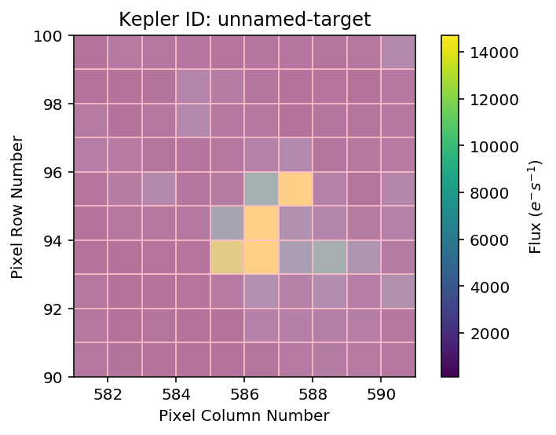
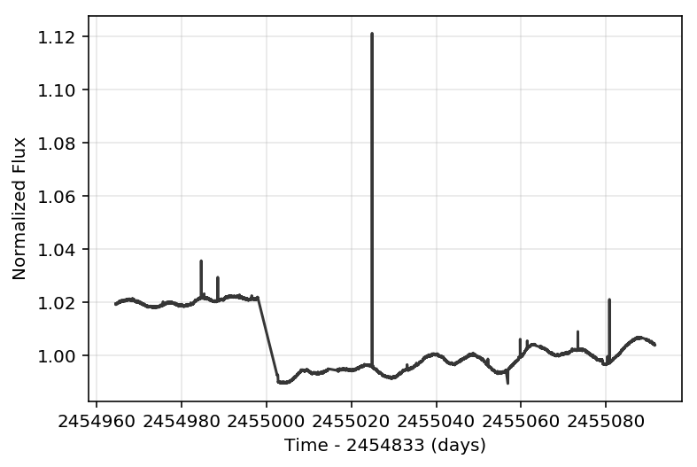

Demo of PR #41¶
Making TPFs from cluster superstamps
The data comes from Ann-Marie Cody’s Dropbox files:
In [1]:
# %load /Users/obsidian/Desktop/defaults.py
import pandas as pd
import matplotlib.pyplot as plt
%matplotlib inline
%config InlineBackend.figure_format = 'retina'
In [2]:
from astropy.io import fits
In [3]:
import glob
import numpy as np
from astropy.coordinates import SkyCoord
from lightkurve.targetpixelfile import KeplerTargetPixelFile
In [4]:
#! du -hs /Volumes/elonflux/Images
About 1 GB of individual fits files.
In [5]:
#images = np.sort(glob.glob("/Volumes/elonflux/Images/*.fits"))
#images = np.sort(glob.glob("/Users/obsidian/temp/*.fits"))
#images = np.sort(glob.glob("/Volumes/CHICAGO/*.fits"))
#images = np.sort(glob.glob("/Volumes/Saigon/*.fits"))
images = np.sort(glob.glob("/Volumes/Oxygen/*.fits"))
In [6]:
images.shape
Out[6]:
(28,)
About 5713 images.
Debug¶
In [7]:
position = SkyCoord('19h20m51.23s +37d46m30.0s', frame='icrs')
In [8]:
tpf = KeplerTargetPixelFile.from_fits_images(images, position=position, size=(10, 10), quality_bitmask=None)
0%| | 0/28 [00:00<?, ?it/s]
---------------------------------------------------------------------------
NameError Traceback (most recent call last)
<ipython-input-8-85b2bac16edc> in <module>()
----> 1 tpf = KeplerTargetPixelFile.from_fits_images(images, position=position, size=(10, 10), quality_bitmask=None)
~/GitHub/lightkurve/lightkurve/targetpixelfile.py in from_fits_images(images, position, size, extension, target_id, **kwargs)
596 target_id=target_id)
597 for idx, img in tqdm(enumerate(images), total=len(images)):
--> 598 t0 = time.time()
599 if isinstance(img, fits.ImageHDU):
600 hdu = img
NameError: name 'time' is not defined
In [17]:
tpf.plot(frame=1, aperture_mask=tpf.pipeline_mask)
Out[17]:
<matplotlib.axes._subplots.AxesSubplot at 0xa2c8de390>

In [18]:
lc_raw = tpf.to_lightcurve().normalize()
In [19]:
lc_raw.plot(linestyle='solid')
Out[19]:
<matplotlib.axes._subplots.AxesSubplot at 0xa2cee8da0>

In [ ]:
tpf.to_fits("temp.fits", overwrite=True)